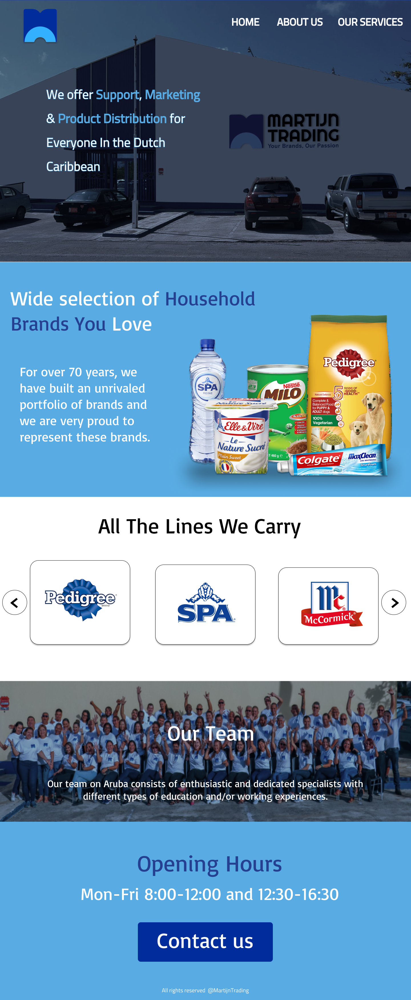
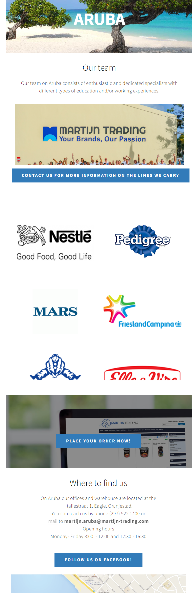

Website before
How I did it
For the hero section, I ensured visitors could immediately understand the business. I used a modern slider to display their brands, highlighted their team, and added a contact button for easy communication.